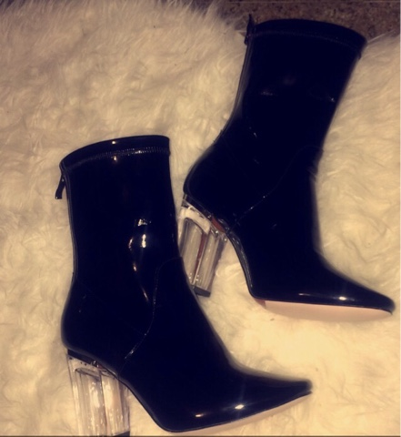

Give a girl the right shoes and she can conquer the world! -Marilyn Monroe
As we all know shoes can either break or make an outfit.
That's why is super duper important to make sure that shoes you decide to wear look good and are comfortable to wear.
When I go out I tend to opt for a platform heel as they are more suitable for long wear than stilettos.Occasionally I may find myself wearing a stiletto but I tend to regret it later on in the day!
I would reccomend wearing stilettos to dinner parties,restaurants etc as you won't be standing up for a huges amount of time.
For casualwear I like to wear really simple but nice trainers.This is because I love the cute effortlessness of them.My favourite trainors would be my Nike Huaraches,Nike Cortez and Adidas Superstars.However sometimes wearing these shoes can get a bit boring or monetonous.This is when I would opt for low rise doc martens instead.
